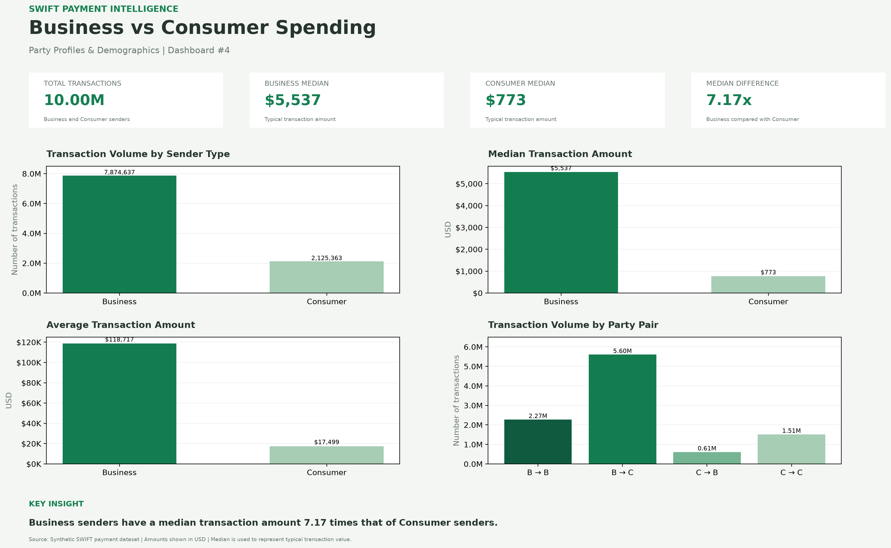

1. Transaction Value & Party Profile Analysis

2. Sender-Beneficiary Combination
Transactions are classified into four combinations based on the sender and beneficiary types.
| Transaction Pair | Transactions | Share |
|---|---|---|
| B → B | 2,270,945 | 22.71% |
| B → C | 5,603,692 | 56.04% |
| C → B | 610,605 | 6.11% |
| C → C | 1,514,758 | 15.15% |
Party Classification
B = Business
C = Consumer
The arrow represents the direction of payment, from sender to beneficiary.
3. Key Analytical Findings
Business senders account for 7,874,637 transactions (78.75%), approximately 3.7 times the number of Consumer sender transactions.
Business senders have a median transaction value of $5,537.36, compared with $772.62 for Consumer senders. This represents a 7.17× difference.
Business-to-Consumer (B→C) transfers form the largest party-pair category, representing 56.04% of all transactions.
Average transaction values are substantially higher than median values for both groups, indicating that high-value observations influence the averages. Median values better represent typical transaction amounts.
4. Reconstructed Business Rules & Patterns
Transactions are classified according to sender type: Business (B) or Consumer (C), using ORDERING_TYPE.
Business-originated transactions have a higher median transaction value than Consumer-originated transactions.
Transactions are distributed across four combinations: B→B, B→C, C→B and C→C. B→C is the most frequent combination.
High-value observations influence the average transaction amount. Median values provide a more representative measure of typical transaction value.
5. Executive Analytical Brief
The dataset reveals distinct transaction patterns between Business and Consumer participants. Business senders dominate overall transaction volume and demonstrate substantially higher median transaction values. Business-to-Consumer (B→C) transfers represent the largest sender-beneficiary combination.
6. Business Implications & Recommendations
1. Customer Segmentation
Develop differentiated payment services for Business and Consumer segments based on their transaction volume and typical payment values.
2. Transaction Monitoring
Incorporate sender classification and transaction characteristics into transaction monitoring to better understand different payment behaviours.
3. Payment Flow Analysis
Further examine Business-to-Consumer (B→C) transfers, which account for the largest party-pair category, to identify their underlying transaction patterns.